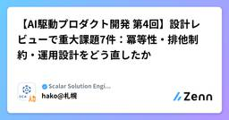
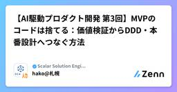
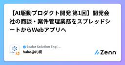

Scalar Solution Engineer Blogのフィード
https://zenn.dev/p/scalar_sol_blog
Scalar製品を活用するための情報をまとめていきます。 インフラの仕組み作り、AI駆動開発のテクニック、Scalar製品の活用方法、AI Agent の使い方など、Scalarの製品に限らず、幅広く取り扱っています。
フィード

【AI駆動プロダクト開発 第5回】Spring Boot × Next.js：認証・監査・通知までAI設計をコードに落とす
Scalar Solution Engineer Blogのフィード
前回の記事はこちら!本記事は、Nexus Architectとの壁打ちから生まれた社内向けWebアプリ RADAR の開発を追う全5回連載の第5回です。今回はSpring Boot、Next.js、OIDC、行レベル認可、通知、監査、実利用後の再設計を扱います。 この連載の構成回テーマ主な内容第1回完成形と全体像完成したRADARの機能、利用者、中核業務、リポジトリ構成第2回企画と壁打ちAIとの壁打ち、Vision、成功指標、仮説、ペルソナ、UIモック第3回MVPと本番設計コンシェルジュMVP、実運用検証、本番技術選定、MMI...
1日前

【AI駆動プロダクト開発 第4回】設計レビューで重大課題7件：冪等性・排他制約・運用設計をどう直したか
Scalar Solution Engineer Blogのフィード
前回の記事はこちら!本記事は、Nexus Architectとの壁打ちから生まれた社内向けWebアプリ RADAR の開発を追う全5回連載の第4回です。今回は境界コンテキスト、正式化トランザクション、5観点レビュー、重大課題への対応を扱います。 この連載の構成回テーマ主な内容第1回完成形と全体像完成したRADARの機能、利用者、中核業務、リポジトリ構成第2回企画と壁打ちAIとの壁打ち、Vision、成功指標、仮説、ペルソナ、UIモック第3回MVPと本番設計コンシェルジュMVP、実運用検証、本番技術選定、MMI・DDD評価...
2日前

【AI駆動プロダクト開発 第3回】MVPのコードは捨てる：価値検証からDDD・本番設計へつなぐ方法
Scalar Solution Engineer Blogのフィード
前回の記事はこちら!本記事は、Nexus Architectとの壁打ちから生まれた社内向けWebアプリ RADAR の開発を追う全5回連載の第3回です。今回はコンシェルジュMVP、実運用検証、本番技術選定、MMI・DDD評価を扱います。 この連載の構成回テーマ主な内容第1回完成形と全体像完成したRADARの機能、利用者、中核業務、リポジトリ構成第2回企画と壁打ちAIとの壁打ち、Vision、成功指標、仮説、ペルソナ、UIモック第3回MVPと本番設計コンシェルジュMVP、実運用検証、本番技術選定、MMI・DDD評価第4回...
3日前

【AI駆動プロダクト開発 第2回】AIに要件定義を丸投げしない：Vision・仮説・UIをつなぐ壁打ち術
Scalar Solution Engineer Blogのフィード
前回の記事はこちら!本記事は、Nexus Architectとの壁打ちから生まれた社内向けWebアプリ RADAR の開発を追う全5回連載の第2回です。今回はAIとの壁打ち、Vision、成功指標、仮説、ペルソナ、UIモックを扱います。 この連載の構成回テーマ主な内容第1回完成形と全体像完成したRADARの機能、利用者、中核業務、リポジトリ構成第2回企画と壁打ちAIとの壁打ち、Vision、成功指標、仮説、ペルソナ、UIモック第3回MVPと本番設計コンシェルジュMVP、実運用検証、本番技術選定、MMI・DDD評価第4回...
4日前

【AI駆動プロダクト開発 第1回】開発会社の商談・案件管理業務をスプレッドシートからWebアプリへ
Scalar Solution Engineer Blogのフィード
!Googleスプレッドシートで管理していた商談・案件・人員アサインを、AIとの壁打ちから本番Webアプリへ変えました。本記事では、まず完成した開発会社向けプロダクト RADAR の全体像と、それを支える設計・リポジトリ構成を紹介します。 この連載の構成回テーマ主な内容第1回完成形と全体像完成したRADARの機能、利用者、中核業務、リポジトリ構成第2回企画と壁打ちAIとの壁打ち、Vision、成功指標、仮説、ペルソナ、UIモック第3回MVPと本番設計コンシェルジュMVP、実運用検証、本番技術選定、MMI・DDD評価第4回設計レ...
5日前

Kubernetes上のScalarDBをRDS MySQLの証明書検証つきSSLにしてみたら、あちこちで足止めされた話【後編】
Scalar Solution Engineer Blogのフィード
はじめに前編 では、RDS MySQL の CA 証明書を JKS に変換して Vault 経由で安全に配るところまでを書きました。今回はその続きで、実際に ScalarDB Cluster と schema-loader を MySQL に繋いでみたら、また別のところでハマった話です。「証明書も Secret も用意できたし、あとは繋ぐだけでしょ」と思っていたのですが、甘かったです。この記事は後編です。前編（証明書変換と Vault 編）から読むとより流れが分かります。 この記事に出てくる横文字を先にざっくり説明します前編とは別に、後編で本格的に使う用語だけまとめておき...
9日前
Kubernetes上のScalarDBをRDS MySQLの証明書検証つきSSLにしてみたら、あちこちで足止めされた話【前編】
Scalar Solution Engineer Blogのフィード
はじめにScalarDB Cluster と RDS MySQL の通信は、これまでも useSSL=true&requireSSL=true で暗号化されていました。でもこれだと「通信が暗号化されている」しか保証されず、オレオレ証明書でも成立してしまうので「本当に自分たちの RDS と話しているのか」までは確認できていませんでした。そこで今回は、証明書が Amazon の RDS 用 CA から発行されたものかまで検証する設定に変えることにしました。単純そうに見えたのですが、証明書の変換・パスワードの渡し方・Vault の権限・ドライバの違いと、想定より多くのところで...
10日前
AIの言う通りにGitLab RunnerをEKSに置いたら、CI環境が詰んで全やり直しになった話
Scalar Solution Engineer Blogのフィード
概要GitLab CI/CDからVPC内のリソース（Vaultなど）にアクセスするにあたり、最初はEKS上にself-hosted Runnerを構築しましたが、運用要件との不一致からEC2ベースのRunnerへ再構築した構成変更の記録です。なぜEKSではダメだったのかというアーキテクチャの落とし穴と、具体的なTerraformの実装例、そこから得られた設計の教訓を共有します。 対象読者GitLab CI/CD を使っていて、Shared Runner の限界にぶつかった方EKS を使っていて、Runner どこに置こうか迷っている方AI に言われたことをそのまま実...
11日前
【K8s】Kong × Keycloakの認証沼。235コミット溶かしたStaging構築（後編：Secret注入とArgoCDの壁）
Scalar Solution Engineer Blogのフィード
概要前編では client_auth のデフォルト罠と、discovery が内部 URL を返してしまう問題について書きました。今回は Kong に Keycloak のシークレット（client_secret）をどうやって渡すか という問題で3回やり直した話を書きます。最終的にたどり着いたのは KongVault という方式でした。 シークレット問題の背景YAML の構造問題を乗り越えたら、次はシークレットの問題です。Kong の OIDC プラグインには client_secret を設定する必要があります。Keycloak に「自分は正規のクライアントですよ」...
12日前
Terraform / Kubernetes の構築で、初心者がよく指摘されるポイントのまとめ
Scalar Solution Engineer Blogのフィード
弊社では、AWS、Azure、GCP に対応した kubernetes ベースの Scalar製品を展開するインフラのテンプレートを開発しています。この開発をエンジニア歴の浅い二人にお願いしており、二人からあがってくるマージリクエスト（MR）のレビューを重ねると、指摘の多くは毎回異なる「新しい問題」ではなく、同じパターンの再発であることが分かってきます。そこで、繰り返し指摘している事項をまとめました。 対象読者Terraform / Kubernetes を使ったインフラ構築を始めたばかりのエンジニアIaC の MR がなかなかレビューを通らず、指摘の傾向を知りたい方AI ...
16日前
「名前が価値を語る」プロダクト命名をAIにやらせる — nexus-architect の命名スキル実践
Scalar Solution Engineer Blogのフィード
プロダクトやツールに名前を付けるとき、「かっこいいけど意味が薄い」「意味は正しいけど覚えにくい」の間で延々と悩んだ経験はないでしょうか。この記事では、Claude Code のスキル /product:name-product（nexus-architect の product プラグイン）を使い、頭字語（アクロニム）型の命名 — 名前の各文字が英単語の頭文字になっていて、名前そのものが製品価値を表すフレーズになる — をAIエージェントに支援させる流れを、実際の題材で最後まで通してみます。題材は「Engineering BOM に対して代替部品候補を提示する AIエージェント連携サ...
16日前
【K8s】Kong × Keycloakの認証沼。235コミット溶かしたStaging構築（前編：OIDCエンドポイントとヘアピンの罠）
Scalar Solution Engineer Blogのフィード
概要以前、Test 環境で Kong × Keycloak の OIDC 認証を構築した記事を書きました。前回はこちら 👇https://zenn.dev/scalar_sol_blog/articles/dafd1f9b828515「Staging でも同じようにやるだけでしょ」と思っていたのですが、気づいたら OIDCの設定で 235コミット になっていました。この記事では、Staging 環境で詰まった2つのポイントを書きます。① client_auth のデフォルト設定が思ってたのと違った② ログイン画面は出るのにログインできない 対象読者Kong ...
22日前
【K8s】「全部Spotでいいじゃん」とはいかなかった。EKS + KarpenterでSpotとOn-Demandを使い分けの試行錯誤
Scalar Solution Engineer Blogのフィード
はじめにStaging EKS に Karpenter を導入して、ワークロードによってノードを使い分ける構成を作りました。「Spot インスタンスを使えばコストが下がる」とは聞いていたのですが、「じゃあ全部 Spot でいいじゃん」とはならなくて……。「どのワークロードを Spot に乗せていいのか」「Spot が突然消えたときに何が起きるのか」を考えながら設計していく作業が思ったより大変でした。構築の記録と、ハマったポイントをまとめておきます。 対象読者Karpenter を初めて触る方EKS で Spot インスタンスを使ってコスト削減をしたい方「Spot ...
23日前
「nexus-architect」実行のAIトークンコストを見積もる
Scalar Solution Engineer Blogのフィード
この記事では、AIエージェントパイプラインの実行コスト(トークンコスト)を事前に見積もり、実行中に自動計測し、実測で見積もりを校正する仕組みを Claude Code プラグインに実装した方法を解説します。弊社で開発しているシステムアーキテクチャ設計エージェント「nexus-architect」を題材に、次の3点を紹介します。価格とヒューリスティクスを単一の JSON に集約する設計Claude Code の hooks でトランスクリプトからトークン使用量をフェーズ別に自動記録する実装LOC(コード行数)ベースの事前見積もりモデルと、実測による校正ループ「AIエージェント...
24日前
cert-manager設計で最初に迷ったIssuerの選択
Scalar Solution Engineer Blogのフィード
概要この記事では、cert-managerの設計を進める中で「ClusterIssuerとIssuerのどちらを選ぶべきか」で苦労した経験を書いています。上司のレビューを通じてたくさんの気づきがありました。その過程を記録しています。 対象読者cert-managerの設計でIssuerとClusterIssuerの使い分けに迷っている方Blast Radiusという概念を設計に落とし込もうとしている方Kubernetes上でゼロトラストの設計を学んでいる方 背景・目的ステージング環境をゼロトラスト化するプロジェクトで、cert-managerの設計を担当する...
24日前
CIは「作る」、ArgoCDは「維持する」GitOps導入で一番悩んだツール間の役割分担
Scalar Solution Engineer Blogのフィード
はじめにStaging 環境に ArgoCD を導入して、GitLab CI と組み合わせた CI/CD パイプラインを作りました。「ArgoCD を入れたら自動デプロイできるんでしょ？」と思っていたのですが、甘かったです……。「GitLab CI と ArgoCD の役割をどう分けるか」「どこを Terraform で管理して、どこを ArgoCD に任せるか」といった判断が思ったより難しく、設計から詰まりました。構築の記録と、ハマったポイントをまとめておきます。 対象読者ArgoCD を初めて触る方GitLab CI と組み合わせて自動デプロイの仕組みを作ろう...
25日前
north-southとeast-westの違いを理解するまで
Scalar Solution Engineer Blogのフィード
自己紹介こんにちは。SESとして株式会社Scalarに常駐しているインフラエンジニアの岩﨑です。実務経歴8ヶ月目で、最近はKubernetes上でのcert-manager設計に取り組んでいます。 概要この記事では、cert-managerの設計を進める中で「north-southとeast-westの使い分け」を理解するまでの過程を書いています。証明書設計を始めた当初、north-southとeast-westという言葉の意味から始まり、「なぜ使い分けるのか」「自分のプロジェクトではどう当てはめるのか」という疑問を順番に解消していった記録です。理解するまでに時間がかかっ...
1ヶ月前
【後編：接続編】ScalarDB Analytics で分析基盤を作ってみた話
Scalar Solution Engineer Blogのフィード
はじめに前編では Private Subnet に EMR を Terraform で建てるまでの話を書きました。今回はその EMR から ScalarDB Analytics Server に実際に繋いでデータを読んでみた話です。「前編で EMR が動いたし、あとは繋ぐだけでしょ」と思っていたのですが、色々苦戦したので記事にしました。この記事は後編です。前編（EMR 構築編）はこちら👇https://zenn.dev/scalar_sol_blog/articles/b50755c19475df ScalarDB Analytics ってそもそも何？ScalarD...
1ヶ月前
【前編：EMR 構築編】ScalarDB Analytics で分析基盤を作ってみた話
Scalar Solution Engineer Blogのフィード
はじめに「ScalarDB のデータを ScalarDB Analytics で分析・集計したい」ということで、その実行環境として Amazon EMR を構築することにしました。「Terraform でサクッと作れるでしょ」と思っていたのですが、甘かったです……。Private Subnet に置こうとしたら想定外の罠に次々とハマったので、構築の記録と詰まったポイントをまとめておきます。この記事は前編です。後編では EMR から ScalarDB Analytics に実際に繋ぐ話を書きます。 対象読者AWS EMR を初めて触る方Terraform で EMR...
1ヶ月前
KubernetesのFQDNとCoreDNSを理解するまで
Scalar Solution Engineer Blogのフィード
自己紹介こんにちは。SESとして株式会社Scalarに常駐しているインフラエンジニアの岩﨑です。実務経歴7ヶ月目で、最近はKubernetes上でのcert-manager設計に取り組んでいます。 概要この記事では、cert-managerの設計を進める中で「なぜIPではなくFQDNで通信するのか」を理解するまでの過程を書いています。証明書設計でdnsNamesという項目を書く必要があり、そこで初めてFQDNという概念に向き合いました。「なぜFQDNなのか」「どうやって名前解決されるのか」「FQDNはどう決まるのか」という疑問を順番に解消していった記録です。 対象読者...
1ヶ月前